건설기계설비기사 (2015-05-31 기출문제)
1과목: 재료역학
1. 왼쪽이 고정단인 길이 ℓ 의 외팔보가 ω의 균일분포하중을 받을 때, 굽힘모멘트선도(BMD)의 모양은?
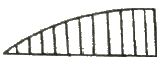
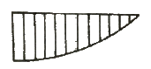
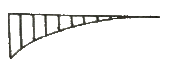
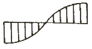
(정답률: 19%)

2. 두께 8mm의 강판으로 만든 안지름 40cm의 얇은 원통에 1MPa의 내압이 작용할 때 강판에 발생하는 후프 응력(원주 응력)은 몇 MPa인가?
- 25
- 37.5
- 12.5
- 50
(정답률: 32%)
3. 그림과 같은 가는 곡선보가 1/4 원 형태로 있다. 이 보의 B 단체 Mo의 모멘트를 받을 때, 자유단의 기울기는? (단, 보의 굽힘 강성 EI는 일정하고, 자중은 무시한다.)
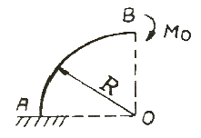
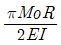
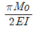
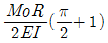
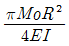
(정답률: 20%)
4. 단면이 가로 100mm, 세로 150mm인 사각 단면보가 그림과 같이 하중(P)을 받고 있다. 전단응력에 의한 설계에서 P는 각각 100 kN 씩 작용할 때 안전계수를 2로 설계하였다고하면, 이 재료의 허용전단응력은 약 몇 MPa 인가?
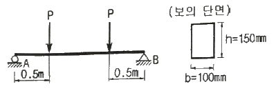
- 10
- 15
- 18
- 20
(정답률: 18%)
5. 지름 3mm의 철사로 평균지름 75mm의 압축코일 스프링을 만들고 하중 10N에 대하여 3cm의 처짐량을 생기게 하려면 감은 회수(n)는 대략 얼마로 해야 하는가? (단, 전단 탄성계수는 G=88GPa 이다.)
- n = 8.9
- n = 8.5
- n = 5.2
- n = 6.3
(정답률: 25%)
6. 길이가 L(m)이고, 일단 고정에 타단 지지인 그림과 같은 보에 자중에 의한 분포하중 w(N/m)가 보의 전체에 가해질 때 점 B에서의 반력의 크기는?
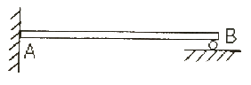
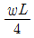
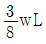
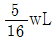
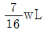
(정답률: 34%)
7. σx=400MPa, σy=300MPa, τxy=200MPa가 작용하는 재료 내에 발생하는 최대 주응력의 크기는?
- 206 MPa
- 556 MPa
- 350 MPa
- 753 MPa
(정답률: 31%)
8. 그림과 같은 단면에서 가로방향 중립축에 대한 단면 2차모멘트는?
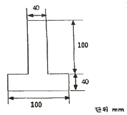
- 10.37 × 106 mm4
- 13.67 × 106 mm4
- 20.67 × 106 mm4
- 23.67 × 106 mm4
(정답률: 30%)
9. 그림과 같은 계단 단면의 중실 원형축의 양단을 고정하고 계단 단면부에 비틀림 모멘트 T가 작용할 경우 지름 D1과 D2의 축에 작용하는 비틀림 모멘트의 비 T1/T2은? (단, D1 = 8cm, D2 = 4cm, ℓ1 = 40cm, ℓ2 = 10cm 이다.)
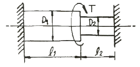
- 2
- 4
- 8
- 16
(정답률: 26%)
10. 그림과 같은 외팔보가 집중 하중 P를 받고 있을 때, 자유단에서의 처짐 δA는? (단, 보의 굽힘 강성 EI는 일정하고, 자중은 무시한다.)
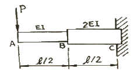
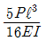
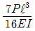
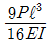
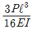
(정답률: 8%)
11. 무게가 각각 300N, 100N 인 물체 A, B 가 경사면 위에 놓여있다. 물체 B와 경사면과는 마찰이 없다고 할 때 미끄러지지 않을 물체 A와 경사면과의 최소 마찰 계수는 얼마인가?
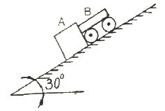
- 0.19
- 0.58
- 0.77
- 0.94
(정답률: 18%)
12. 그림과 같은 직사각형 단면의 단순보 AB에 하중이 작용할 때, A단에서 20cm 떨어진 곳의 굽힘 응력은 몇 MPa인가? (단, 보의 폭은 6cm이고, 높이는 12cm 이다.)
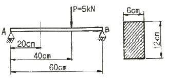
- 2.3
- 1.9
- 3.7
- 2.9
(정답률: 26%)
13. 강체로 된 봉 CD가 그림과 같이 같은 단면적과 재료가 같은 케이블 ①, ②와 C점에서 힌지로 지지되어 있다. 힘 P 에 의해 케이블 ①에 발생하는 응력(σ)은 어떻게 표현되는가? (단, A는 케이블의 단면적이며 자중은 무시하고, a는 각 지점간의 거리이고 케이블 ①, ②의 길이 ℓ은 같다.)
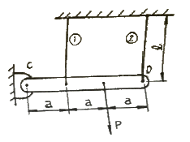
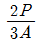
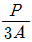
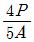
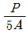
(정답률: 9%)
14. 재료가 전단 변형을 일으켰을 때, 이 재료의 단위 체적당 저장된 탄성에너지는? (단, τ는 전단응력, G는 전단 탄성계수이다.)
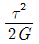
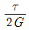
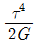
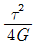
(정답률: 29%)
15. 바깥지름 50cm. 안지름 40cm의 중공원통에 500kN의 압축하중이 작용했을 때 발생하는 압축응력은 약 몇 MPa인가?
- 5.6
- 7.1
- 8.4
- 10.8
(정답률: 30%)
16. 그림과 같이 단순보의 지점 B에 Mo의 모멘트가 작용할 때 최대 굽힘 모멘트가 발생되는 A단에서부터 거리 x는?
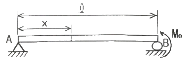
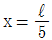
- x = ℓ
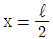
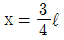
(정답률: 18%)
17. 그림과 같은 트러스가 점 B에서 그림과 같은 방향으로 5kN의 힘을 받을 때 트러스에 저장되는 탄성에너지는 몇 kJ 인가? (단, 트러스의 단면적은 1.2cm2, 탄성계수는 106Pa 이다.)
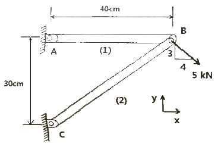
- 52.1
- 106.7
- 159.0
- 267.7
(정답률: 17%)
18. 원형막대의 비틀림을 이용한 토션바(torsion bar) 스프링에서 길이와 지름을 모두 10%씩 증가시킨다면 토션바의 비틀림 스프링상수(비틀림 토크/비틀림 각도)는 몇 배로 되겠는가?
- 1.1-2배
- 1.12배
- 1.13배
- 1.14배
(정답률: 22%)
19. 양단이 현지인 기둥의 길이가 2m이고, 단면이 직사각형(30mm × 20mm)인 압축 부채의 좌굴하중을 오일러 공식으로 구하면 몇 kN인가? (단, 부재의 탄성 계수는 200 GPa이다.)
- 9.9kN
- 11.1kN
- 19.7kN
- 22.2kN
(정답률: 24%)
20. 길이가 2m인 환봉에 인장하중을 가하여 변화된 길이가 0.14cm일 때 변형률은?
- 70 × 10-6
- 700 × 10-6
- 70 × 10-3
- 700 × 10-3
(정답률: 25%)
2과목: 기계열역학
21. 절대 온도가 0에 접근할수록 순수 물질의 엔트로피는 0에 접근한다는 절대 엔트로피 값의 기준을 규정한 법칙은?
- 열역학 제 0법칙 이다.
- 열역학 제 1법칙 이다.
- 열역학 제 2법칙 이다.
- 열역학 제 3법칙 이다.
(정답률: 27%)
22. 오토사이클(Otto cycle)의 압축비 ε=8 이라고 하면 이론 열효율은 약 몇 %인가? (단, k=1.4 이다.)
- 36.8%
- 46.7%
- 56.5%
- 66.6%
(정답률: 32%)
23. 대기압 하에서 물을 20℃에서 90℃로 가열하는 동안의 엔트로피 변화량은 약 얼마인가? (단, 물의 비열은 4.184kJ/kg ·K로 일정하다.)
- 0.8kJ/kg ·K
- 0.9kJ/kg ·K
- 1.0kJ/kg ·K
- 1.2kJ/kg ·K
(정답률: 24%)
24. 펌프를 사용하여 150 kPa, 26℃의 물을 가역단열과정으로 650 kPa로 올리려고 한다. 26℃의 포화액의 비체적이 0.001 m3/kg이면 펌프일은?
- 0.4kJ/kg ·K
- 0.5kJ/kg ·K
- 0.6kJ/kg ·K
- 0.7kJ/kg ·K
(정답률: 32%)
25. 기본 Rankine 사이클의 터빈 출구 엔탈피 hte = 1200 kJ/kg, 응축기 방열량 qL = 1000kJ/kg, 펌프 출구 엔탈피 hpe = 210 kJ/kg, 보일러 가열량 qH = 1210 kJ/kg 이다. 이 사이클의 출력일은?
- 210 kJ/kg
- 220 kJ/kg
- 230 kJ/kg
- 420 kJ/kg
(정답률: 26%)
26. 어떤 냉장고에서 엔탈피 17 kJ/kg의 냉매가 질량 유량 80 kJ/kg로 증발되어 들어가 엔탈피 36 kJ/kg가 되어 나온다. 이 냉장고의 냉동능력은?
- 1220 kJ/hr
- 1800 kJ/hr
- 1520 kJ/hr
- 2000 kJ/hr
(정답률: 24%)
27. 실린더에 밀폐된 8kg의 공기가 그림과 같이 P1=800 kPa, 체적 V1=0.27m3에서 P2=350 kPa, 체적 V2=0.80 m3 으로 직선 변화하였다. 이 과정에서 공기가 한 일은 약 몇 kJ 인가?
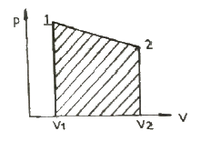
- 254
- 3⑤
- 382
- 390
(정답률: 33%)
28. 공기 2kg이 300K, 600kPa 상태에서 500K, 400kPa 상태로 가열되었다. 이 과정 동안의 엔트로피 변화량은 약 얼마인가? (단, 공기의 정적비열과 정압비열은 각각 0.717 kJ/kg·K과 1.004 kJ/kg ·K 로 일정하다.)
- 0.73 kJ/K
- 1.83 kJ/K
- 1.02 kJ/K
- 1.26 kJ/K
(정답률: 12%)
29. 자연계의 비가역 변화와 관련 있는 법칙은?
- 제 0법칙
- 제 1법칙
- 제 2법칙
- 제 3법칙
(정답률: 29%)
30. 상태와 상태량과의 관계에 대한 설명 중 틀린 것은?
- 순수물질 단순 압축성 시스템의 상태는 2개의 독립적 강도성 상태량에 의해 완전하게 결정된다.
- 상변화를 포함하는 물과 수증기의 상태는 압력과 온도에 의해 완전하게 결정된다.
- 상변화를 포함하는 물과 수증기의 상태는 온도과 비체적에 의해 완전하게 결정된다.
- 상변화를 포함하는 물과 수증기의 상태는 압력과 비체적에 의해 완전하게 결정된다.
(정답률: 19%)
31. 배기체적이 1200 cc, 간극체적이 200 cc의 가솔린 기관의 압축비는 얼마인가?
- 5
- 6
- 7
- 8
(정답률: 28%)
32. 클라우지우스(Clasusis) 부등식을 표현한 것으로 옳은 것은? (단, T는 절대 온도, Q는 열량을 표시한다.)
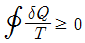
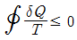
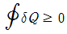
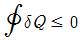
(정답률: 35%)
33. 이상기체의 등온과정에 관한 설명 중 옳은 것은?
- 엔트로피 변화가 없다.
- 엔탈피 변화가 없다.
- 열 이동이 없다.
- 일이 없다.
(정답률: 22%)
34. 해수면 아래 20m에 있는 수중다이버에게 작용하는 절대압력은 약 얼마인가? (단, 대기압은 101 kPa 이고, 해수의 비중은 1.03이다.)
- 101 kPa
- 202 kPa
- 303 kPa
- 504 kPa
(정답률: 31%)
35. 용기에 부착된 압력계에 읽힌 계기압력이 150 kPa이고 국소대기압이 100 kPa 일 때 용기안의 절대 압력은?
- 250 kPa
- 150 kPa
- 100 kPa
- 50 kPa
(정답률: 34%)
36. 압축기 입구 온도가 -10℃, 압축기 출구온도가 100℃, 팽창기 입구 온도가 5℃, 팽창기 출구온도가 -75℃로 작동되는 공기 냉동기의 성능계수는? (단, 공기의 Cp는 1.0035 kJ/kg·℃ 로서 일정하다.)
- 0.56
- 2.17
- 2.34
- 3.17
(정답률: 11%)
37. 역 카르노사이클로 작동하는 증기압축 냉동사이클에서 고열원의 절대온도를 TH, 저열원의 절대온도를 TL이라 할 때, TH/TL=1.6이다. 이 냉동사이클이 저열원으로부터 2.0kW의 열을 흡수한다면 소요 동력은?
- 0.7 kW
- 1.2 kW
- 2.3 kW
- 3.9 kW
(정답률: 23%)
38. 두께 1cm, 면적 0.5m2의 석고판의 뒤에 가열판이 부착되어 1000 W의 열을 전달한다. 가열판의 뒤는 완전히 단열되어 열은 앞면으로만 전달된다. 석고판 앞면의 온도는 100℃이다. 석고의 열전도율이 k=0.79 W/m·K 일 때, 가열 판에 접하는 석고 면의 온도는 약 몇 ℃ 인가?
- 110
- 125
- 150
- 212
(정답률: 28%)
39. 분자량이 30인 C2H6(에탄)의 기체상수는 몇 kJ/kg · K인가?
- 0.277
- 2.013
- 19.33
- 265.43
(정답률: 32%)
40. 출력이 50kW인 동력 기관이 한 시간에 13 kg의 연료를 소모한다. 연료의 발열량이 45000 kJ/kg이라면, 이 기관의 열효율은 약 얼마인가?
- 25%
- 28%
- 31%
- 36%
(정답률: 34%)
3과목: 기계유체역학
41. 한 변이 1m인 정육면체 나무토막의 아랫면에 1080N의 납을 매달아 물속에 넣었을 때, 물위로 떠오르는 나무토막의 높이는 몇 cm인가? (단, 나무토막의 비중은 0.45, 납의 비중은 11이고, 나무토막의 밑면은 수평을 유지한다.)
- 55
- 48
- 45
- 42
(정답률: 10%)
42. 길이 20m의 매끈한 원관에 비중 0.8의 유체가 평균속도 0.3m/s로 흐를 때, 압력손실은 약 얼마인가? (단, 원관의 안지름은 50mm, 점성계수는 8×10-3Pa·s 이다.)
- 614Pa
- 734Pa
- 1235Pa
- 1440Pa
(정답률: 19%)
43. 그림과 같은 노즐을 통하여 유량 Q만큼의 유체가 대기로 분출될 때, 노즐에 미치는 유체의 힘 F는? (단, A1, A2는 노즐의 단면 1, 2에서의 단면적이고 ρ는 유체의 밀도이다.)
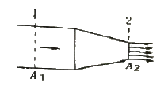
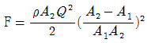
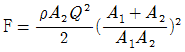
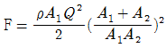
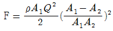
(정답률: 16%)
44. 속도 15 m/s로 항해하는 길이 80m의 화물선의 조파 저항에 관한 성능을 조사하기 위하여 수조에서 길이 3.2m인 모형 배로 실험을 할 때 필요한 모형 배의 속도는 몇 m/s인가?
- 9.0
- 3.0
- 0.33
- 0.11
(정답률: 25%)
45. 정상, 균일유동장 속에 유동방향과 평행하게 놓여진 평판 위에 발생하는 층류 경계층의 두께 δ는 x를 평판 선단으로부터의 거리라 할 때, 비례값은?
- x1
- x1/2
- x1/3
- x1/4
(정답률: 24%)
46. 관로내 물(밀도 1000kg/m3)이 30m/s로 흐르고 있으며 그 지점의 정압이 100 kPa일 때, 정체압은 몇 kPa 인가?
- 0.45
- 100
- 450
- 550
(정답률: 24%)
47. 다음 중 유체에 대한 일반적인 설명으로 틀린 것은?
- 점성은 유체의 운동을 방해하는 저항의 척도로서 유속에 비례한다.
- 비점성유체 내에서는 전단응력이 작용하지 않는다.
- 정지유체 내에서는 전단응력이 작용하지 않는다.
- 점성이 클수록 전단응력이 크다.
(정답률: 18%)
48. 중력과 관성력의 비로 정의되는 무차원수는? (단, ρ : 밀도, V : 속도, l : 특성 길이, μ : 점성계수, P : 압력, g : 중력가속도, c : 소리의 속도)
- ρVl / μ
- V / √gl
- P / ρV2
- V / c
(정답률: 28%)
49. 그림과 같이 경사관 마노미터의 직경 D=10d이고 경사관은 수평면에 대해 θ만큼 기울여져 있으며 대기 중에 노출되어 있다. 대기압보다 Δp의 큰 압력이 작용할 떄, L과 Δp와 관계로 옳은 것은? (단, 점선은 압력이 가해지기 전 액체의 높이이고, 액체의 밀도는 ρ, θ=30° 이다.)
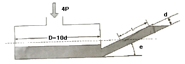
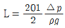
(정답률: 15%)
50. 아래 그림과 같이 직경이 2m, 길이가 1m인 관에 비중량 9800N/m3인 물이 반 차있다. 이관의 아래쪽 사분면 AB 부분에 작용하는 정수력의 크기는?
- 4900N
- 7700N
- 9120N
- 12600N
(정답률: 9%)
51. 유선(streamline)에 관한 설명으로 틀린 것은?
- 유선으로 만들어지는 관을 유관(streamtube)이라 부르며, 두께가 없는 관벽을 형성한다.
- 유선 위에 있는 유체의 속도 벡터는 유선의 접선방향이다.
- 비정상 유동에서 속도는 유선에 따라 시간적으로 변화 할 수 있으나, 유선 자체는 움직일 수 없다.
- 정상유동일 때 유선은 유체의 입자가 움직이는 궤적이다.
(정답률: 24%)
52. 안지름 0.1m인 파이프 내를 평균 유속 5m/s로 어떤 액체가 흐르고 있다. 길이가 100m 사이의 손실수두는 약 몇 m인가? (단, 관내의 흐름으로 레이놀즈수는 1000 이다.)
- 81.6
- 50
- 40
- 16.32
(정답률: 24%)
53. 원관에서 난류로 흐르는 어떤 유체의 속도가 2배가 되었을 때, 마찰계수가 1/√2배로 줄었다. 이때 압력손실은 몇 배 인가?
- 21/2배
- 23/2배
- 2배
- 4배
(정답률: 21%)
54. 유속 3m/s로 흐르는 물속에 흐름방향의 직각으로 피토관을 세웠을 때, 유속에 의해 올라가는 수주의 높이는 약 몇 m 인가?
- 0.46
- 0.92
- 4.6
- 9.2
(정답률: 27%)
55. 항력에 관한 일반적인 설명 중 틀린 것은?
- 난류는 항상 항력을 증가시킨다.
- 거친 표면은 항력을 감소시킬 수 있다.
- 항력은 압력과 마찰력에 의해서 발생한다.
- 레이놀즈수가 아주 작은 유동에서 구의 항력은 유체의 점성계수에 비례한다.
(정답률: 18%)
56. 다음 중 체적 탄성계수와 차원이 같은 것은?
- 힘
- 체적
- 속도
- 전단응력
(정답률: 30%)
57. 다음 중 질량 보존을 표현한 것으로 가장 거리가 먼 것은? (단, ρ는 유체의 밀도, A는 관의 단면적, V는 유체의 속도이다.)
- ρAV = 0
- ρAV = 일정
- d(ρAV) = 0
(정답률: 29%)
58. 공기가 기압 200kPa일 때, 20℃에서의 공기의 밀도는 약 몇 kg/m3인가? (단, 이상기체이며, 공기의 기체상수 R=287J/kg·K이다.)
- 1.2
- 2.38
- 1.0
- 999
(정답률: 29%)
59. 비점성, 비압축성 유체가 그림과 같이 작은 구멍을 향해 쐐기모양의 벽면 사이를 흐른다. 이 유동을 근사적으로 표현하는 무차원 속도 포텐셜이 ø=-2lnr로 주어질 때, r=1인 지점에서의 유속 V는 몇 m/s인가? (단, 로 정의한다.)
- 0
- 1
- 2
-
(정답률: 21%)
60. 압력구배가 영인 평판위의 경계층 유동과 관련된 설명 중 틀린 것은?
- 표면조도가 천이에 영향을 미친다.
- 경계층 외부유동에서의 교란정도가 천이에 영향을 미친다.
- 층류에서 난류로의 천이는 거리를 기준으로 하는 Reynolds수의 영향을 받는다.
- 난류의 속도 분포는 층류보다 덜 평평하고 층류경계층보다 다소 얇은 경계층을 형성한다.
(정답률: 16%)
4과목: 유체기계 및 유압기기
61. 원심펌프에서 발생하는 여러 가지 손실 중 원심 펌프의 성능, 효율에 가장 큰 영향을 미치는 손실은?
- 기계 손실
- 누설 손실
- 수력 손실
- 원판 마찰 손실
(정답률: 62%)
62. 다음 중 유체기계로 분류할 수 없는 것은?
- 유압 기계
- 공기 기계
- 공작 기계
- 유체 전송 장치
(정답률: 80%)
63. 수차의 형식 중에서 유량변화가 심한 곳에 사용할 수 있도록 가동익을 설치하여 부분부하에 대하여 높은 효율을 얻을 수 있는 수차는?
- 펠턴 수차
- 지라르 수차
- 프란시스 수차
- 카플란 수차
(정답률: 65%)
64. 펌프 운전 중 수격현상을 방지하기 위한 대책으로 틀린 것은?
- 관내의 유속을 작게 한다.
- 밸브를 펌프 송출구에서 멀리 설치한다.
- 펌프에 플라이 훨을 설치한다.
- 조압수조를 관로에 설치한다.
(정답률: 75%)
65. 유효 낙차 70m, 유량 95m3/s인 하천에서 수차를 이용하여 발생한 동력이 58600kW일 때 이 수차의 효율은 약 몇 % 인가?
- 79
- 85
- 90
- 94
(정답률: 61%)
66. 입력축과 출력축의 토크를 변환시키기 위해 펌프 회전차와 터빈 회전차 중간에 스테이터를 설치한 유체전동기구는?
- 토크 컨버터
- 유체 커플링
- 축압기
- 서보 밸브
(정답률: 84%)
67. 다음 중 수차를 가장 올바르게 설명한 것은?
- 물의 위치에너지를 기계적 에너지로 변환하는 기계
- 물의 위치에너지를 열 에너지로 변환하는 기계
- 물의 위치에너지를 화학적 에너지로 변환하는 기계
- 물의 위치에너지를 전기 에너지로 변환하는 기계
(정답률: 84%)
68. 사류 펌프(diagonal flow pump)의 특징에 관한 설명 중 틀린 것은?
- 원심력과 양력을 이용한 터보형 펌프이다.
- 구동 동력은 송출량에 따라 크게 변화한다.
- 임의의 송출량에서도 안전한 운전을 할 수 있고, 체절운전도 가능하다.
- 원심 펌프보다 고속 회전할 수 있다.
(정답률: 44%)
69. 다음 중 그 구조나 사용 용도, 사용 빈도 등의 관점에서볼 때 일반펌프가 아닌 특수펌프만으로 구성된 것은?
- 마찰 펌프, 제트 펌프, 기포 펌프, 수격 펌프
- 용적형 펌프, 재생 펌프, 축류 펌프, 볼류트 펌프
- 퍼스톤 펌프, 플런저 펌프, 기어 펌프. 베인 펌프
- 회전형 펌프, 프로펠러 펌프, 원심 펌프, 수격 펌프
(정답률: 68%)
70. 관류형 송풍기에 관한 설명으로 틀린 것은?
- 날개 깃의 길이가 길고, 폭이 다소 좁으며 압력이 15mmAq ~ 75mmAq의 낮은 정압을 발생시킬 수 있다.
- 날개 깃면이 회전 방향과 동일한 전향깃이다.
- 덕트나 관류 안에 연결해 원심력을 이용하여 배출되는 기류가 축방향으로 이송되는 구조이다.
- 설치 공간은 다른 기종에 비해 적은 편이며, 소음이 적고 운전상태는 정숙한 편이다.
(정답률: 42%)
71. 램이 수직으로 설치된 유압 프레스에서 램의 자중에 의한 하강을 막기 위해 배압을 주고자 설치하는 밸브로 적절한 것은?
- 로터리 베인 밸브
- 파일럿 체크 밸브
- 블리드 오프 밸브
- 카운터 밸런스 밸브
(정답률: 79%)
72. 유압 배관 중 석유계 작동유에 대하여 산화작용을 조장하는 촉매역할을 하기 때문에 내부에 카드뮴 또는 니켈을 도금하여 사용하여야 하는 것은?
- 동관
- PPC관
- 엑셀관
- 고무관
(정답률: 72%)
73. 베인모터의 장점에 관한 설명으로 옳지 않은 것은?
- 베어링 하중이 작다.
- 정·역회전이 가능하다.
- 토크 변동이 비교적 작다.
- 기동시나 저속 운전시 효율이 높다.
(정답률: 57%)
74. 그림과 같은 회로도는 크기가 같은 실린더로 동조하는 회로이다. 이 동조회로의 명칭으로 가장 적합한 것은?
- 래크와 피니언을 사용한 동조회로
- 2개의 유압모터를 사용한 동조회로
- 2개의 릴리프 밸브를 사용한 동조회로
- 2개의 유량제어 밸브를 사용한 동조회로
(정답률: 62%)
75. 유압펌프에 있어서 체적효율이 90% 이고 기계효율이 80% 일 때 유압펌프의 전효율은?
- 23.7%
- 72%
- 88.8%
- 90%
(정답률: 76%)
76. 다음 중 작동유의 방청제로서 가장 적당한 것은?
- 실리콘유
- 이온화합물
- 에나멜화합물
- 유기산 에스테르
(정답률: 66%)
77. 그림과 같은 압력제어 밸브의 기호가 의미하는 것은?
- 정압 밸브
- 2-way 감압 밸브
- 릴리프 밸브
- 3-way 감압 밸브
(정답률: 75%)
78. 그림과 같은 유압 잭에서 지름이 D2=2D1일 때 누르는 힘 F1과 F2의 관계를 나타난 색으로 옳은 것은?
- F2 = F1
- F2 = 2F1
- F2 = 4F1
- F2 = 8F1
(정답률: 80%)
79. 펌프의 무부하 운전에 대한 장점이 아닌 것은?
- 작업시간 단축
- 구동동력 경감
- 유압유의 열화 방지
- 고장방지 및 펌프의 수명 연장
(정답률: 73%)
80. 유압기기와 관련된 유체의 동역학에 관한 설명으로 옳은 것은?(오류 신고가 접수된 문제입니다. 반드시 정답과 해설을 확인하시기 바랍니다.)
- 유체의 속도는 단면적이 큰 곳에서는 빠르다.
- 유송이 작고 가는 관을 통과할 때 난류가 발생한다.
- 유송이 크고 가는 관을 통과할 때 층류가 발생한다.
- 점성이 없는 비압축성의 액체가 수평간을 흐를 때, 압력수두와 위치수두 및 속도수두의 함은 일정하다.
(정답률: 64%)
5과목: 건설기계일반 및 플랜트배관
81. 교상용접(Soild-Sate Welding) 형식이 아닌 것은?
- 롤 용접
- 고온압접 용접
- 압출 용접
- 전자빔 용접
(정답률: 34%)
82. 판재의 두께 6mm, 원통의 바깥지름 500mm인 원통의 마름질한 판뜨기의 길이[mm]의는 약 몇 얼마인가?
- 1532
- 1542
- 1552
- 1562
(정답률: 31%)
83. 밀링작업에서 분할대를 사용하여 원주를 씩 등분하는 방법으로 옳은 것은?
- 18구멍짜리에서 15구멍씩 돌린다.
- 15구멍짜리에서 18구멍씩 돌린다.
- 36구멍짜리에서 15구멍씩 돌린다.
- 36구멍짜리에서 18구멍씩 돌린다.
(정답률: 27%)
84. 단조를 위한 재료의 가열법 중 틀린 것은?
- 너무 과열되지 않게 한다.
- 될수록 급격히 가열하여야 한다.
- 너무 장시간 가열하지 않도록 한다.
- 재료의 내외부를 균일하게 가열한다.
(정답률: 49%)
85. 주조에서 열점(hot spot)의 정의로 옳은 것은?(오류 신고가 접수된 문제입니다. 반드시 정답과 해설을 확인하시기 바랍니다.)
- 유로의 확대부
- 응고가 가장 더딘 부분
- 유료 단면적이 가장 좁은 부분
- 주조시 가장 고온이 되는 부분
(정답률: 3%)
86. 조립형 프레임이 주조 프레임과 비교할 때 장점이 아닌 것은?
- 무게가 1/4정도 감소된다.
- 파손된 프레임의 수리가 비교적 용이하다.
- 기계가공이나 설계 후 오차 수정이 용이하다.
- 프레임이 복잡하거나 무게가 비교적 큰 경우에 적합하다.
(정답률: 47%)
87. 측정기의 구조상에서 일어나는 오차로서 눈금 또는 불균일이나 마찰, 측정압 등의 변화 등에 의해 발생하는 오차는?
- 개인 오차
- 기기 오차
- 우연
- 불합리 오차
(정답률: 48%)
88. 슈퍼 피니싱에 관한 내용으로 틀린 것은?
- 숫돌 길이는 일감 길이와 같은 것을 일반적으로 사용한다.
- 숫돌의 폭은 일감의 지름과 같은 정도의 것이 일반적으로 쓰인다.
- 원통의 외면, 내면, 평면을 다듬을 수 있으므로 많은 기계 부품의 정밀 다듬질에 응용된다.
- 접촉면적이 넓으므로 연삭작업에서 나타난 이송선, 숫돌이 떨림으로 나타난 자리는 완전히 없앨 수 있다.
(정답률: 30%)
89. 금속면에 크롬을 고온에서 확산 침투시키는 것을 크로마이징(cromizing)이라 한다. 이는 주로 어떤 성질을 향상시키기 위함인가?
- 인성
- 내식성
- 전연성
- 내충격성
(정답률: 46%)
90. 방전가공에서 가장 기본적인 회로는?
- RC 회로
- 고전압법 회로
- 트랜지스터 회로
- 임펄스 발전시회로
(정답률: 45%)
91. 불도저를 이용한 확토작업에서 작업거리(L) =100m, 전진속도(V1) = 10m/min, 후진 속도(V2) = 8m/min, 기어변환 소요시간 (t)=20 sec일 경우 1회 작업 사이클 시간(Cm)은 약 몇 min인가?
- 23
- 33
- 43
- 53
(정답률: 47%)
92. 콘크리트를 구성하는 재료를 저장하고 소정의 배합 비율대로 계량하고 MIXER에 투입하여 요구되는 품질의 콘크리트를 생산하는 설비는?
- ASPHALT PLANT
- BATCHER PLANT
- CRUSHING PLANT
- CHEMICAL PLANT
(정답률: 62%)
93. 시가지의 큰 건물이나 구조물 등의 기초공사 작업 시, 회전식 버킷에 의해 지반을 천공하여, 소음과 진동이 작고 큰 지름의 깊은 구멍을 뚫는데 가장 적합한 굴착 기계는?
- 어스 드릴(earth drill)
- 굴삭기(excavator)
- 크레인(crane)
- 드래그 라인(drag line)
(정답률: 68%)
94. 머캐덤 롤러는 차동장치를 갖고 있는데 차동장치를 사용하는 목적으로 가장 적합한 것은?
- 좌우 양륜의 회전속도를 일정하게 하기 위해서
- 커브에서 무리한 힘을 가하지 않고 선회하기 위해서
- 연약지반에서 차륜의 공회전을 방지하기 위해서
- 전륜과 후륜의 접지압을 같게 하기 위해서
(정답률: 52%)
95. 건설기계에서 기관에서 윤활유의 역할이 아닌 것은?
- 밀봉 작용
- 냉각 작용
- 세척 작용
- 응착 작용
(정답률: 52%)
96. 1차 쇄석기(crusher)는 어느 것인가?
- 조(jaw) 쇄석기
- 콘(con) 쇄석기
- 로드 밀(rod mill) 쇄석기
- 해머 밀(hammer mill) 쇄석기
(정답률: 69%)
97. 모터 그레이더가 가장 효과적으로 할 수 있는 작업은?
- 산지 개간 작업
- 절개지 확장 굴삭
- 적재 작업
- 제설 작업
(정답률: 53%)
98. 공기 압축기에 관한 설명으로 틀린 것은?
- 공기 압축기는 구동유닛, 압축유닛 그 밖의 부품으로 구성되어 있다.
- 공기 압축기는 착암기, 바이브레이터 등의 동력이 되는 압축공기를 만드는 기계이다.
- 압축유닛은 압축기를 작동시키는 동력을 공급하는 주요부로서 가솔린기관 또는 디젤기관에 사용된다.
- 일반적으로 공기 압축기는 현장에 설치하여 놓은 고정식과 자유로이 이동시킬 수 있는 이동식이 있다.
(정답률: 46%)
99. 카운터 밸런스 지게차의 마스트 후경각의 범위로 가장 알맞은 것은?(오류 신고가 접수된 문제입니다. 반드시 정답과 해설을 확인하시기 바랍니다.)
- 5 ~ 10도
- 15 ~ 20도
- 25 ~ 30도
- 30 ~ 35도
(정답률: 22%)
100. 오스테나이트 스레인리스강의 설명으로 틀린 것은?
- 18-8 스테인리스강으로 통용된다.
- 비자성체이며 열처리하여도 경화되지 않는다.
- 저온에서는 취성이 크며 크리프강도가 낮다.
- 인장강도에 비하여 낮은 내력을 가지며, 가공 경화성이 높다.
(정답률: 52%)